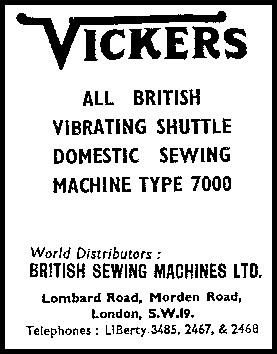
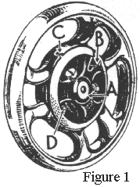
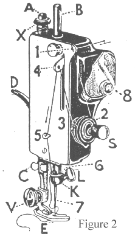
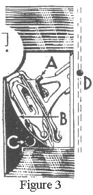
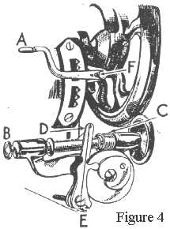
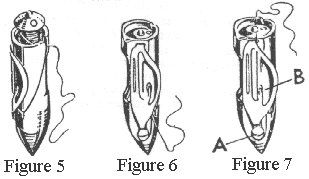
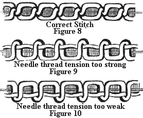
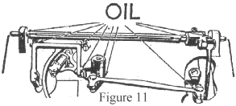
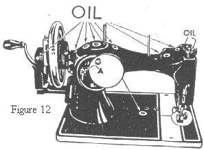

This machine has been thoroughly tested and inspected before leaving our factory and the following directions will be found sufficient to enable you to acquire a perfect working knowledge without any personal instruction.
Whether or not you have previously used a sewing machine, in order to obtain the very best service from this model we strongly advise you to carry out all these directions, paragraph by paragraph, before putting this machine into use.
With the left hand pull out the handle bar piston, take the handle in the right hand, pivot it into position and release the handle bar piston. The handle is then locked in position and ready for operation.
When you have finished work, the handle must be turned back again, by reversing the above procedure, before replacing the cover.
To prevent accidents to the working parts, always keep the fly wheel disconnected from the stitching mechanism when the machine is not in use.
To connect the fly wheel, turn the disconnector disc (A figure 1) on the fly wheel until the steel connector (B) is uppermost, turn the fly wheel until the slot (C) is in line with the steel connector, then press the connector into the slot and the fly wheel is connected to the stitching mechanism.
To disconnect the fly wheel, pull back the steel connector.
The fly wheel must always turn towards you and the handle away from you.
The presser foot (E figure 2) must be raised except when sewing.
Do not work the machine with the shuttle and needle threaded unless there is material between the presser foot and the feed teeth.
The shuttle slide must be always be closed when sewing.
To operate the hand machine, connect the fly wheel to the stitching mechanism, raise the presser foot (E figure 2) by lifting the presser bar lifter (D figure 2), place a piece of material under the presser foot, lower the presser bar lifter and turn the handle from you with an easy and regular motion. Continue to do this until you are able to guide the material correctly with the left hand.
Disconnect the fly wheel from the stitching mechanism, place both feet upon the treadle and turn the fly wheel towards you, at the same time allowing the feet to move freely and lightly with the motion of the treadle.
Continue to do this until a regular and easy movement is acquired and you are able to work the treadle so that you can restart the machine without the fly wheel turning in the wrong direction.
When familiar with the working movement, reconnect the fly wheel to the stitching mechanism and place a piece of material under the presser foot (E figure 2). Lower the presser foot by means of the presser bar lifter (D figure 2) and again work the machine without it being threaded, until you have become accustomed to guiding the material.
Raise the needle bar (B figure 2) to its highest point by turning the fly wheel towards you. Hold the needle in your left hand with the flat side to the right, loosen the thumb screw (L figure 2) and insert the needle into the groove in the left hand side of the needle clamp (K figure 2) as high as it will go. The long groove on the needle should now be shewing on the left hand side of the needle clamp. Tighten the thumb screw.
Make certain that the presser bar lifter (D figure 2) is raised. Place the reel of cotton on the cotton pin, pass the thread through the eyelet (1), from right to left between the tension discs (2), under the hook of the check spring (3), through the thread lifter (4), behind the hooks (5 and 6) and finally from left to right through the eye of the needle (7).
About three inches of thread should be drawn through the needle before commencing to sew.
To remove the shuttle from the shuttle carrier, open the front shuttle slide and turn the fly wheel slowly towards you until the shuttlw is in full view (figure 3).
Note - On no account should the machine be operated with the shuttle slide open; failure to observe this precaution may easily cause serious damage to the machine.
Draw the shuttle lifter lever (A figure 3) sharply towards you,when the shuttle will be raised and easily removed. Hold it with the open end downwards and the bobbin will fall out.
Never attempt to lift the shuttle out of the carrier by the spring, or you may damage the shuttle tension.
Disconnect the fly wheel from the stitching mechanism. Move the stitch and feed direction lever (A figure 4) to reverse. Place the reel of thread on the cotton pin, pass the thread between the tension discs (8 figure 2) and fasten to the bobbin by threading, from the inside, through the end with the hole in it.
Hold the bobbin in the right hand, with the left hand pull out the bobbin piston (B figure 4). Draw back any surplus thread onto the cotton reel.
Lift the winder to the fly wheel and operate the machine until you have sufficient cotton on the bobbin.
Disconnect the winder from the fly wheel, remove the bobbin, re-connect the fly wheel to the stitching mechanism. Return the stitch and feed direction lever to the forward position.
To replace the bobbin, take the shuttle between the thumb and fingers of the left hand with the pointed end towards you and the tension spring uppermost, put the bobbin in the shuttle so that the end with the hole in the brass disc is at the open end of the shuttle (figure 5).
Press the end of the bobbin with the fore finger of the left hand whilst threading the shuttle. Pull the free end of the thread down through the slanting slot towards the point of the shuttle (figure 6), then up and left under the point in the centre of the spring (B figure 7) until you have three clear inches of thread. The shuttle is now threaded.
Place the shuttle in its carrier so that the point is towards you and the tension spring is uppermost and lay the free end of the thread on the outside of the back shuttle slide.
Hold the end of the needle thread with the left hand, leaving it quite slack, turn the fly wheel towards you until the needle moves down and up again to its highest point; thus catching the under thread.
Then pull the end of the needle thread you are holding, so that the under thread is brought up with it throuhg the needle hole in the needle plate. Close to front shuttle slide.
Place both ends of the thread and the material to be sewn under the presser foot and lower the presser bar lifter.
To commence sewing, turn the fly wheel towards you, i.e., with the hand machine turn the handle of the hand appliance away from you, and for the treadle machine proceed as instucted in paragraph F.
Guide the work with your left hand, but take great care not to pul or push it as this might break the needle.
When passing over thick parts or cross seams, sew slowly and turn the fly wheel carefully with the hand so as not to bend or break the needle.
With the needle at its highest point, lift the presser foot, (E figure 2) which also releases the tensionon the top cotton automatically, draw the material away towards the back of the machine, at the same time pulling it slightly outwards to the left.
Careful observance of this rule will prevent the breaking of many needles. Sever the theads by passing them over the thread cutter (C figure 2) above the presser foot.
Leave the ends of the thread a few inches long under the presser foot.
Immediately you have finished working, care should be taken to keep the presser foot raised so that the feed teeth shall not be damaged.
For ordinary stitching, the tension of the upper and under threads should be equal so as to lock both threads in the centre of the work (figure 8). If either tension is stronger than the other, imperfect stitching will result (figures 9 and 10).
The correct stitch can usually be obtained by merely varying the tension on the upper thread. Befor doing this, first lower the presser foot, then turn the tension disc nut (S figure 2) over to the right for increased tension, or to the left for less tension.
To obtain a perfect stitch, fine fabrics require a lighter tension, while heavy materials need greater tension.
All machines are regulated before leaving the factory and it is therefore seldom necessary to alter the under tension. Should it become necessary to do so however, remove the shuttle from the shuttle carrier. To increase the tension, turn the screw (A figure 7) to the right. To lessen, turn to the left, with the screw driver supplied with the machine. It is advisable only to adjust the screw a half turn at a time.
Care should be taken to use threads and needles suitable for the material to be sewn.
The forward and backward movement of the stitching mechanism is controlled by the stitch regulator lever (A figure 4). When this lever is in the central position the mechanism is in neutral and there is no stitch motion.
To make the machine stitch forward, lower the lever below the point marked neutral or danger and for the reverse, raise it above this point.
Approximately the same size stitch for the forward or reverse movement may be obtained by loosening the knurled set screw (F figure 4), setting the stitch regulator lever, in the reverse position, at the desired size of stitch and tightening up the screw.
Use a short stitch and as light a tension as possible, this will allow the stitching to be loose enough to stretch with the material.
Stop the machine when the needle is rising, but still in the material. Raise the presser foot and turn the work, using the needle as a pivot. Then lower the presser foot.
For most family sewing it is rarely necessary to alter the pressure on the material. When sewing fine silk or flimsy material, lighten the pressure by giving the thumb screw (X figure 2) two or three turns upwards. To increase the pressure give the thumb screw a few turns downwards.
The Sewing Guide is attached to the machine by screwing the thumb screw into the threaded hole (D figure 3) on the bedplate. By slackening off the thumb screw and moving the guide nearer or further away from the presser foot, the exact position of the stitching on the material can be controlled.
To ensure easy running the machine requires to be oiled so that all the moving parts in contact are covered with a film of oil. These should never be allowed to become dry.
If used constantly the machine should be oiled daily, while with moderate use an occasional oiling is sufficient. A drop of oil applied at the points indicated by the arrows in figures 11 and 12 is sufficient.
The large plate at hte back of the head should be turned up and oil applied to the stitch regulator cam (A figure 11). Rub a little oil over the surface of the shuttle raceway (B figure 3), and a few drops onto the cotton wad in the oil hole (C figure 3) under the front shuttle slide.
In addition oil should be applied to the hole in the fly wheel (D figure 1) and on the hand appliance to the holes in the large gear, frame and connecting lever. When oiling, insert the oil can spout well into the holes.
After oiling, run the machine rapidly for a few minutes so that the oil may reach the bearings. Neglect to oil the machine will shorten its life and cause you both trouble and annoyance. Always use a good quality sewing machine oil. Inferior oil clogs the bearings, prevents efficient working, and causes rapid wear of the mechanism.
If the machine runs hard after being idle, oil with paraffin. Then run rapidly, wipe clean and oil with a good quality sewing machine oil.
This may be caused by:
If the needle thread breaks, see that:
If the under thread breaks:
See that the needle is correctly set (paragraph G) and is not too blunt, or too fine for the thread.
See that both tensions are equal (paragraph O)
See that the check spring (3 figure 2) is not broken, and that the upper and under tensions are equal (paragraph O), that both shuttle and needle are properly threaded and that the thread is of good quality and the correct size for the needle.